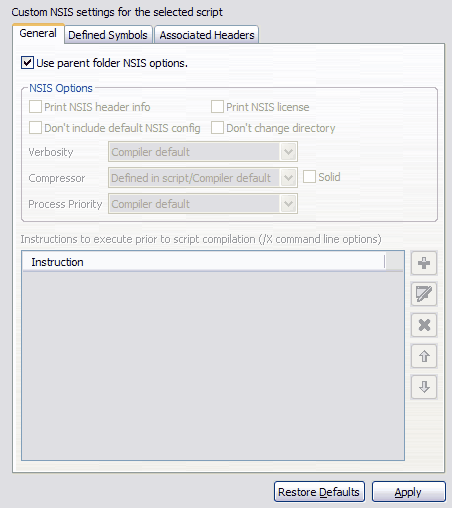

Script Properties
The EclipseNSIS script Properties page is invoked by selecting the Properties menu in any view that shows objects, such as the resource navigator view, and then selecting the EclipseNSIS item. The Properties menu is available when a single object is selected.
The EclipseNSIS Preferences Page
is used to set global options while compiling an NSIS script. dialog is
used to set
script level compiler options. The Properties page is used to set
custom options for a particular script. The major portion of the
Properties page is identical in behavior to the EclipseNSIS Preferences Page.

- Use global NSIS options
- Use the compiler options defined on the EclipseNSIS Preferences Page .
Previous | Contents | Next
Copyright © 2004, 2005 Sunil Kamath (IcemanK).